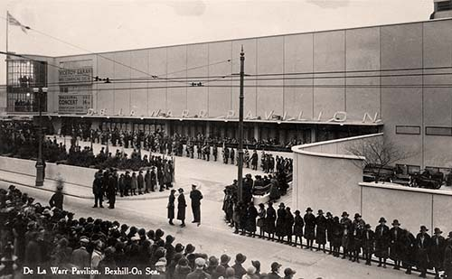

De La Warr Pavilion (1935)
Commissioned by 9th Earl De La Warr to replace the elitist Victorian 'winter garden', the De La Warr Pavilion was designed by architects Erich Mendelsohn (German) and Serge Chermayeff (Russian).
The Pavilion was completed in eleven and a half months at a public cost of £70,000 (£4.5m in today's money).
Britain's first major welded-steel framed and Modernist building was opened on the 12th December 1935 by the Duke and Duchess of York to a crowd of thousands.

Crowds gather at the opening of the De La Warr Pavilion, 1935.
During the second world war it was requisitioned by the Ministry of Defence and sustained minor damage from a bomb falling on the adjacent Metropole Hotel.Over the years the steelwork proved vulnerable to the seaside climate and with lacking public funds, the Pavilion fell into disrepair by the early 1980's[12].
In 1989 The De La Warr Pavilion Charitable Trust was formed to restore and redevelop the building. Securing a £6m grant through the Arts Council and Heritage Lottery, the regenerated Pavillion reopened in 2005.
Today the De La Warr stands as an iconic Grade I listed building. It is the cultural centre for contemporary art in Bexhill, bringing in 400,000 visitors a year.
Plaque displayed inside the pavilion.